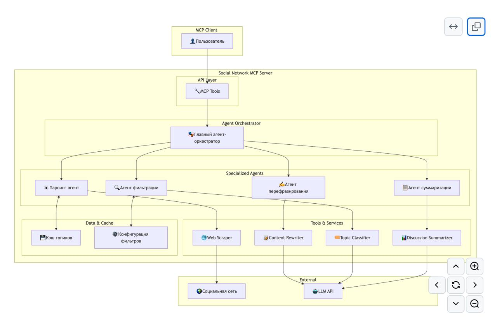

Posts with tag "mcp"
Как прошёл AI Code Jam в Яндексе
posted on 2025-06-04

Вчера у нас был внутренний яндексовый хакатон. Мы изучали, как работают агентские системы. Задания можно было выбрать любые, мы в нашей команде решили написать агентскую систему для работы с социальной сетью.
Фишка хакатона была в том, что решение нужно было полностью на vibe-кодить, то есть решение должно было быть написано нейронкой, а не вручную. Нам нейросеть помогла описать архитектуру системы. Довольно быстр: накидала её модули и даже сгенерировала диаграмму в формате Mermaid. Получилось очень круто! Затем мы приступили к реализации.
У нас уже были некоторые примеры MCP и агентов, которые дали организаторы хакатона. Нейронке очень помогли эти примеры, потому что можно было указать ей на них и сказать: «Сделай вот похожим образом, но с такой-то логикой». Должен заметить, что никто из троих членов моей команды не пробовал прежде писать MCP сервера, и даже с примерами сомневаюсь что мы бы справились так быстро как нейросеть.
Для тех, кто не в теме, немножечко поясню, что такое MCP и что такое агенты. MCP — это специальный сервер, который позволяет нейросети совершать определённые действия в других системах или даже в физическом мире. Например, можно сделать MCP, которая будет давать нейросети интерфейс для того, чтобы искать анекдоты на «Анекдот.ру». Или можно сделать железного боевого робота и дать сделать MCP для управления этим роботом. Главное — не забудьте внедрить в неё три правила робототехники Азимова :-)
Что же такое агенты? Агенты — это, по сути, фрагменты программы, где прописана логика и она объединена с некими инструментами, которые агент может использовать в рамках своей задачи. Например, можно сделать агента, который умеет шутить на определённую тему, и дать ему в качестве инструмента доступ к MCP, который умеет искать анекдоты на сайте «Анекдот.ру». Тогда такого агента можно будет попросить создать оригинальный анекдот, скажем, про русского, немца и француза, и убедиться что ничего похожего нет на сайте. Тогда агент с помощью своего инструмента, который мы ему предоставили, сможет пойти поискать существующие анекдоты на заданную тему, а затем на их базе придумать свой, отличющийся от прочих. Или нейронка может решить сгенерировать анекдот и только писать похожие - тут уж всё зависит от промпта, который вы зададите агенту.
А ещё фишка агентов в том, что их можно объединять в агентские системы, когда один агент может обращаться к другому. При этом агенты работают в команде и у каждого из них своя роль, определяемая промптом. Качество работы такой системы должно быть выше, чем качесто одной нейронки с большим промптом, который пытается охватить все аспекты работы.
По нашей задумке, агентская система для работы с соцсетью должна была состоять из главного агента, с которым общается клиент, и его подчинённых агентов, которые умеют делать разные вещи. Например, один агент отвечал за получение данных из соцсети, парсинг страниц и выдачу их в виде JSON. Второй агент умел писать посты в разных стилистиках. Третий агент должен был уметь фильтровать контент в зависимости от того, какие предпочтения у пользователя. И четвёртый подчинённый агент должен был уметь суммировать переписку в разных тредах.
К сожалению, за время хакатона (он длился всего 3 часа) мы сумели реализовать только два MCP: первый, который умеет парсить страницы, и второй, который умеет переписывать контент в нужную стилистику. Думаю, за день вполне можно было бы довести всю систему до ума. Но даже так считаю, что у нас неплохие шансы на победу, потому что из 26 команд, которые участвовали в хакатоне, хоть какие-то решения сдали только 10. Пожелайте нам удачи!
Обсудить пост в Telegram канале.This blog covers learning, holism, ideas, zerocoder, python, ai, projects, closed, commonlisp, tips, seo, telegram, bot, прототип, smarthome, yandexcloud, logging, software, thoughts, salebot, bots, notes, emacs, lisp, codeassistant, infrastructure, news, lispworks, mcp, hackathon, sql, yandex, cloud
Created with passion by 40Ants